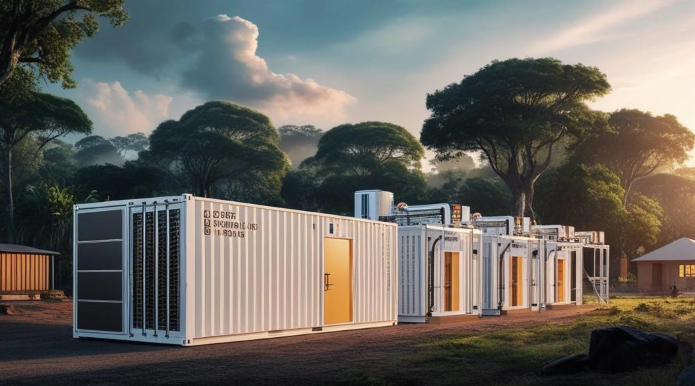
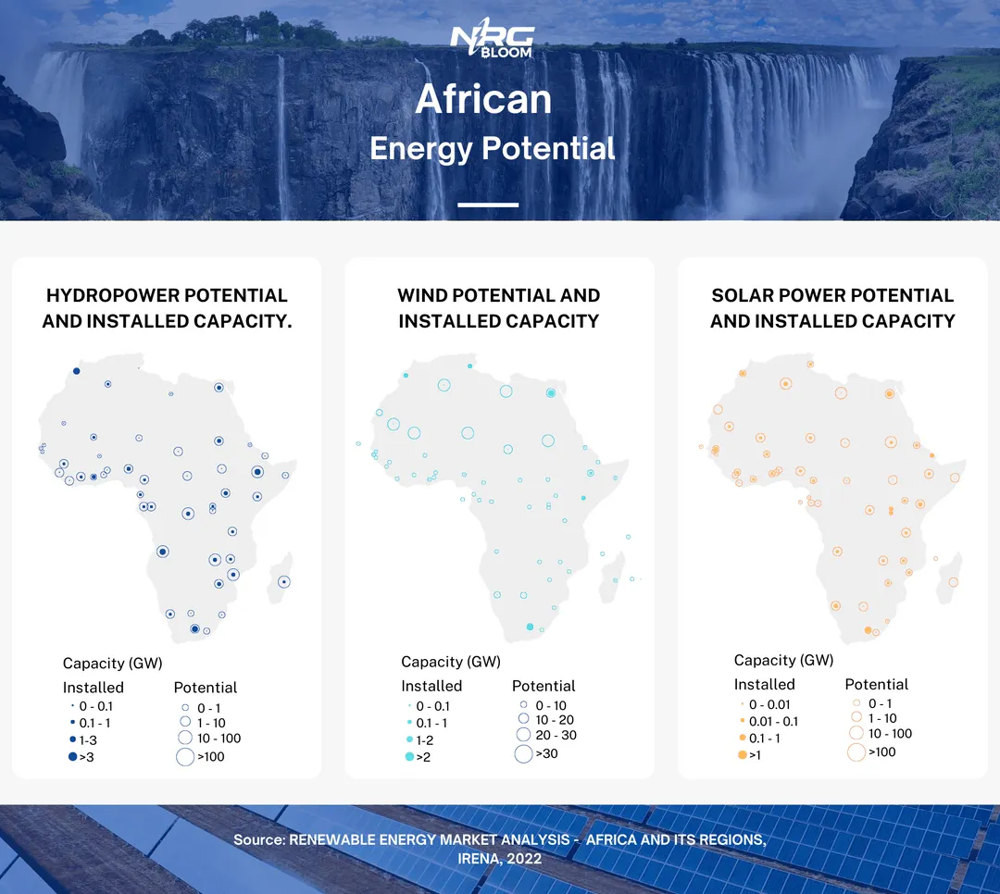
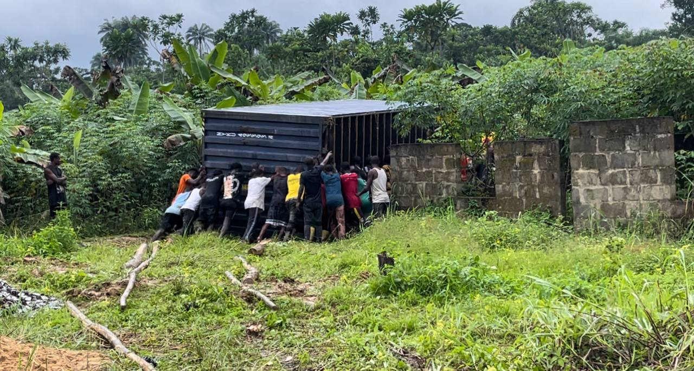
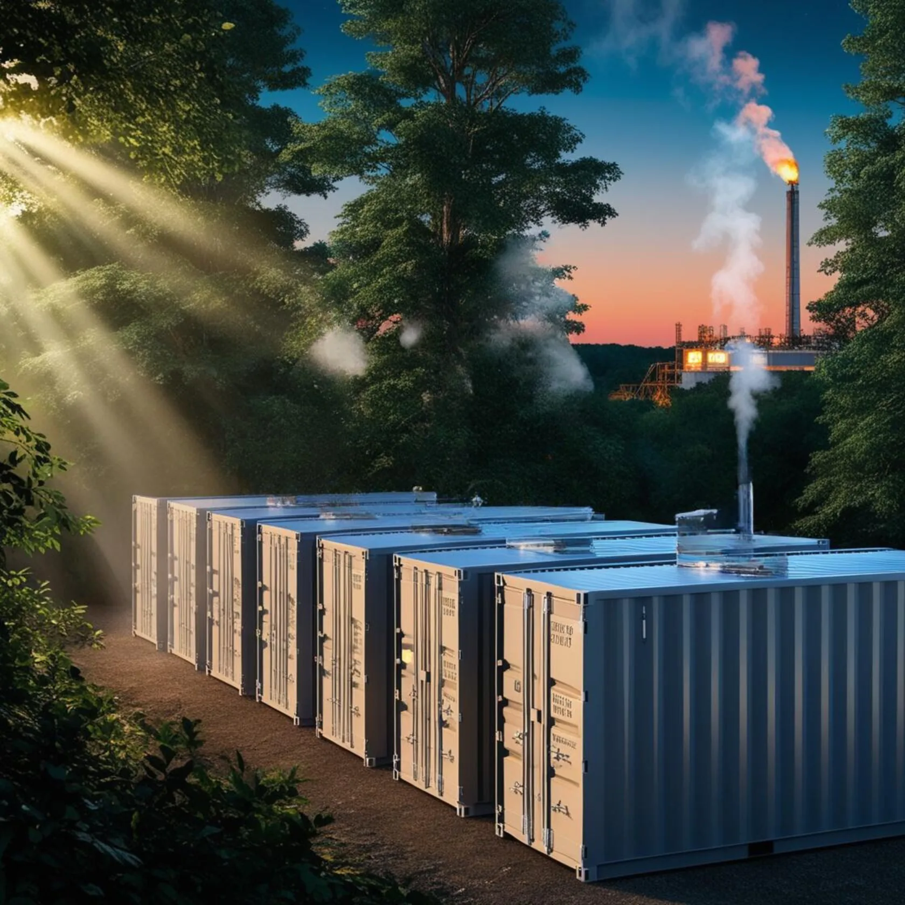

Why Africa is the Future of Bitcoin Mining

As Bitcoin's popularity and value continue to soar, the competition for mining intensifies. This surge underscores the critical need for sustainable practices, particularly utilizing wasted or stranded energy, to mitigate the environmental impact of Bitcoin mining. At NRG Bloom, we are pioneering this approach in Africa, specifically in Nigeria. By harnessing off-grid and excess natural gas—energy that would otherwise be wasted—we transform it into a catalyst for economic growth and community development near gas flaring sites. Africa's abundant renewable and stranded resources make it the ideal frontier for sustainable Bitcoin mining, with NRG Bloom leading the charge.
I. The Rise of Bitcoin Mining and the Sustainability Challenge
Understanding Bitcoin Mining
Bitcoin mining is the process of discovering new blocks and adding them to the Bitcoin blockchain, unlocking new bitcoins in the process. It operates on a Proof of Work protocol, requiring miners to solve complex computational puzzles to validate transactions and expand the blockchain. Miners compete to generate valid block hashes. As more miners join the network, the collective computational power increases, leading to higher difficulty levels and escalating energy consumption.
This ever-increasing difficulty is at the heart of Bitcoin mining's substantial energy demands. Modern ASIC miners perform trillions of hash calculations per second, consuming significant amounts of electricity. At its peak during the 2022 bull market, Bitcoin mining consumed up to 204.5 terawatt-hours (TWh) (1) of energy annually, highlighting the immense energy-intensive nature of the process.
The Environmental Impact
The carbon footprint of Bitcoin mining is a significant concern. Many mining operations have traditionally relied on fossil fuels, particularly coal, contributing to global greenhouse gas emissions. The high energy consumption not only strains power grids but also exacerbates environmental degradation. Factors such as mining difficulty, hardware efficiency, and the energy mix of mining locations influence the overall emissions. As mining becomes more challenging, it requires more powerful hardware and greater energy consumption, further amplifying its environmental impact.
Global Concerns and the Need for Renewable Energy
The substantial energy consumption associated with Bitcoin mining has sparked global concerns about its environmental sustainability. There is an urgent need to shift towards renewable energy sources like solar, wind, and hydro, and carbon negative energy sources, like excess natural gas, to mitigate these effects. Utilizing renewable energy not only reduces the carbon footprint but also promotes a more sustainable and responsible approach to technological advancement. By adopting cleaner energy sources, the Bitcoin mining industry can significantly lower greenhouse gas emissions and contribute positively to global climate goals.
II. Africa's Untapped Renewable Energy Potential
Abundance of Resources
Africa is endowed with vast untapped renewable energy resources. Only about 5% of the continent's immense hydropower potential has been utilized. The Sahara Desert offers high solar irradiance levels, presenting enormous potential for solar energy generation. Similarly, coastal regions in countries like Kenya, Tanzania, and Mozambique have favorable wind speeds suitable for wind energy installations. Additionally, Nigeria is rich in natural gas, most of which is being wasted with 5.3 billion cubic meters being flared yearly(2). Despite this abundance, these valuable resources remain largely underdeveloped, presenting a significant opportunity for sustainable energy projects.

Strategic Advantages
Africa's geographical positioning provides strategic advantages for optimal energy harnessing. The continent's lower competition in the energy market creates greater opportunities for scaling sustainable Bitcoin mining operations. The availability of off-grid and inexpensive energy sources, particularly stranded energy like excess natural gas, makes Africa an attractive destination for such initiatives. By tapping into these resources, we can not only reduce waste but also drive economic growth in remote communities.
III. NRG Bloom: Pioneering Sustainable Mining in Africa
Our Mission and Core Values
At NRG Bloom, our mission is to unlock Africa's energy for a brighter future. We transform Africa’s untapped potential by utilizing wasted energy—energy without a buyer—to power Bitcoin mining. As the sole buyer of this surplus energy, we reduce waste and drive economic growth in remote communities. We are committed to innovation, sustainability, and empowering audiences about Bitcoin’s potential to revolutionize Africa, starting with the most underserved regions.

Innovative Use of Renewable Energy
We employ cutting-edge technologies to harness renewable and stranded energy sources. By focusing on off-grid and excess natural gas from gas flaring sites, we convert wasted energy into valuable resources. Our operations not only reduce environmental waste but also improve the livelihoods of communities living near these sites. Through revenue-sharing structures, we ensure that both the miners and the local communities benefit, fostering positive relationships and mutual growth.
Driving Industry Innovation
NRG Bloom is setting industry standards by integrating sustainable energy solutions with advanced Bitcoin mining technologies. We invest heavily in research and development to continuously improve our processes and technologies. By training and employing local community members for roles such as security, data technicians, and ASIC repairs, we build local capacity and contribute to technological advancement in the regions where we operate.
IV. Addressing Infrastructure Challenges
Acknowledging the Hurdles
Africa faces significant infrastructure challenges, including underdeveloped and unreliable power grids, grid instability, and limited access to electricity, especially in rural and remote areas. These issues result in frequent load shedding, blackouts, and significant economic losses, hindering access to essential services like healthcare and education.
NRG Bloom's Solutions
Inspired by the resilience and ingenuity of the Nigerian people, we believe that where there's a will, there's a way. We overcome infrastructural challenges by operating off-grid and tapping into reliable energy sources such as excess natural gas that is continuously flared. Our approach bypasses the unstable grid infrastructure, allowing us to operate efficiently and sustainably.

Our revenue-sharing model benefits both NRG Bloom and the local communities. By sharing revenues, we align our success with the prosperity of the communities, ensuring they see tangible benefits from our operations. This structure also provides us with protection against low Bitcoin prices, as our energy costs are not fixed, keeping our break-even price low.
Capacity Building
We are dedicated to building local capacity through training programs for the local workforce. By employing community members, we not only provide job opportunities but also empower individuals with valuable skills. This includes roles in security, data management, and technical maintenance such as ASIC repairs. Our initiatives boost technological advancement and contribute to the socio-economic development of the regions we serve.
V. Socio-Economic Benefits for Africa
Economic Growth
Our operations contribute to economic growth by creating jobs and stimulating local economies. The establishment of mining facilities increases demand for goods and services, supporting local businesses and generating revenue. By attracting both domestic and foreign investment, we help develop energy infrastructure and support other economic sectors.
Empowering Communities
We improve access to electricity through off-grid renewable energy systems, bringing power to rural and remote communities that are not connected to the national grid. Our projects support community development initiatives, including building schools, healthcare facilities, and infrastructure improvements. By enhancing access to technology and the internet, we open up new opportunities for education and communication.
Contributing to Global Goals
Our efforts align with several Sustainable Development Goals (SDGs):
- SDG 7 (Affordable and Clean Energy): By developing carbon-negative energy infrastructure, we expand access to affordable and clean energy.
- SDG 8 (Decent Work and Economic Growth): Our operations create job opportunities and stimulate economic growth.
- SDG 9 (Industry, Innovation, and Infrastructure): We drive industrial development and innovation by investing in energy infrastructure and technological advancements.
- SDG 13 (Climate Action): Utilizing carbon-negative energy sources reduces greenhouse gas emissions, contributing to climate action.
By embracing sustainable Bitcoin mining powered by renewable energy, Africa can position itself as a leader in sustainable practices, contributing to a global shift towards a more sustainable and equitable economic system.
VI. The Future Outlook
NRG Bloom's Vision
Looking ahead, we plan to expand and scale our operations across Africa, continuing our commitment to sustainability and innovation. Our long-term goals include fostering stronger communities, advancing technological capabilities, and driving economic growth through sustainable practices. We aim to be at the forefront of transforming Africa's energy landscape, unlocking its full potential for the benefit of all.

Opportunities for Collaboration
We invite investors and stakeholders to join us in this transformative mission. By collaborating with us, you can play a crucial role in advancing sustainable Bitcoin mining and supporting socio-economic development in Africa. If you are interested in getting involved in the Nigerian Bitcoin mining market, please contact us at info@nrgbloom.com.
Conclusion
Africa stands on the brink of an energy revolution, with the potential to reshape the future of Bitcoin mining. With its abundant renewable and stranded energy resources, the continent is poised to become a global leader in sustainable mining practices. NRG Bloom is proud to pioneer this movement, turning wasted energy into a force for positive change. While challenges exist, we are optimistic about the achievable future. Together, we can unlock Africa's energy for a brighter future.